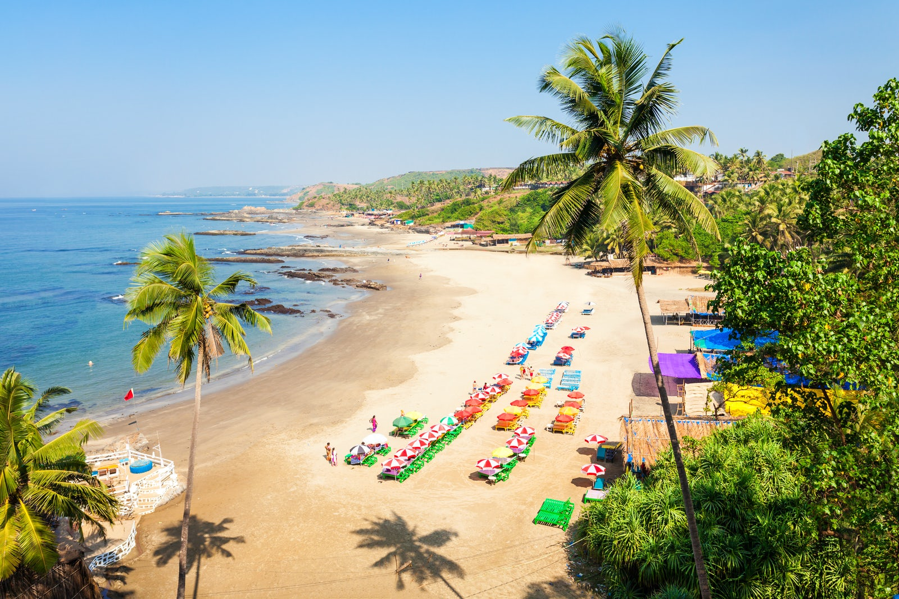
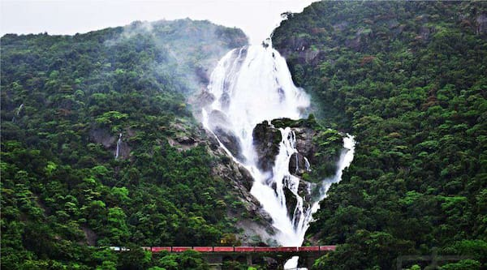
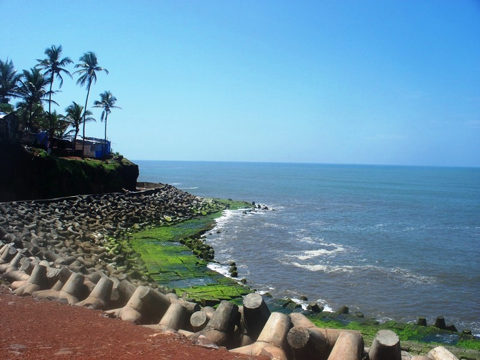
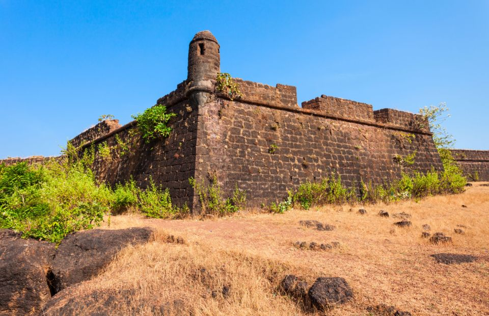

Calangute Beach
"Situated 15 km from Panjim, Calangute Beach is the longest beach in North Goa, stretching from Candolim to Baga. Due to its sheer size and popularity, it is a hub for tourists and backpackers from all over the world.Popular as the "Queen of Beaches", the Calangute Beach of Goa is among the top ten bathing beaches in the world. Being one of the busiest and most commercial beaches of Goa, it is swarming with eating joints, shacks and clubs serving cocktails, beer and seafood. The Calangute Beach is also known for its water sports activities like parasailing, water surfing, banana ride and jet-skiing."
Fort Aguada

"Fort Aguada is a 17th-century Portuguese fort looking out at the confluence of Mandovi River and the Arabian Sea. The crumbling ramparts of the fort stand on the Sinquerim Beach, approximately 18 km from Panjim. The highlight of the fort is a lone four-storey lighthouse (which is one-of-its-kind in Asia )and a stunning view of the sunset.Built-in 1612 as a protection from Dutch and Marathas, Fort Aguada was the most prized and crucial fort for the Portuguese and covers the entire peninsula at the southwestern tip of Bardez. The fort is so named after the Portuguese Word for water i.e. 'Agua' and used to be a replenishing source of freshwater for sailors. In fact, it has the capacity to hold 2,376,000 gallons of water and was one of the biggest freshwater reservoirs of Asia.Fort Aguada has also been used as Aguada jail. A statue in front of the jail salutes the freedom fighters, giving the fort a touch of patriotism."
Dudhsagar Falls
"One of India's tallest waterfalls, the Dudhsagar Falls is located inside the Mollem National Park. The majestic falls are a little farther inland approximately 60 km from Panaji on the Goa - Karnataka Border. Literally translating to Sea of Milk , the 310 m high waterfall is divided into four tiers on the Mandovi river and resemble a heavy rush of milk flowing effortlessly down the hill.While most people arrive at the Dudhsagar falls by jeep or by their own private transport from Panaji and nearby areas, others choose to visit the falls through a train journey or by trekking. The famous Dudhsagar Railway trek is closed to the public but the trek to the lower falls is still open.".
Anjuna Beach
"Located near Panjim at a distance of 21 km, Anjuna Beach is among the most popular beaches in North Goa, stretching almost 2km. A hippie paradise of sorts it is characterized by its rocky outcrops. From family outings to adrenaline-filled adventures, Anjuna Beach is famed for its golden coastline, nightclubs, beach shacks, watersports, full-moon parties and flea markets.Come and rock the night way at Curlies, or dance to some techno at Cafe Lilliput. During the day you can sample some delicious culinary goodness at Burger Factory, Baba Au Rhum, or Basilico. Known as the jewel of Ozran, Anjuna became a favourite haunt for the hippies in the swingin' 60s and still retains the same vibe to this day. "
Chapora Fort
"Chapora Fort, located 10 km away from Mapusa, is undeniably one of the most famous forts in Goa. Built by the Portuguese in 1717, Chapora Fort has a long and fascinating history attached to it. More popularly known as the 'Dil Chahta Hai Fort', its claim to fame was the 2001 Bollywood blockbuster shot here. A scintillating escape, it offers beautiful views of the sea and Chapora River.The fortifications around the current location of Chapora Fort existed long before the Portuguese even landed in Goa. It was originally built by Muslim ruler Adil Shah and was called Shahpura. The fort was later reconstructed by the Portuguese who named it Chapora, after the Chapora River that flows right alongside it. The highlight of the fort is the breathtaking view of the adjoining Vagator beach overlooking the Arabian Sea, especially at sunset. Famous bollywood movie 'Dil Chahta Hai' was shot at this fort. "
Basilica of Bom Jesus

"he Basilica of Bom Jesus Church located in Goa is one of a kind in India and is known for its exemplary baroque architecture. Built in 1594 and consecrated in 1605, the building of this church coincides with the beginning of Christianity in India. The church is located in Old Goa in Bainguinim about 10 km away from Panjim. The oldest church in Goa, it holds the remains of St. Francis Xavier, a special friend of St. Ignatius Loyola with whom he founded the Society of Jesus (Jesuits). Even after 400 years, the remains are in good condition and are taken out once every decade. A site with rich cultural and religious significance, the Basilica of Bom Jesus has been declared a World Heritage Site by UNESCO. Literally translating to 'Holy Jesus', this is the only church in Old Goa that is not been plastered on the outside. The facade of the church has triangular roofing which is delicately carved with the initials 'IHS', which is an abbreviation for Jesuit emblem meaning 'Jesus, Saviour of Men'."